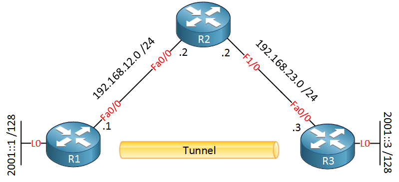
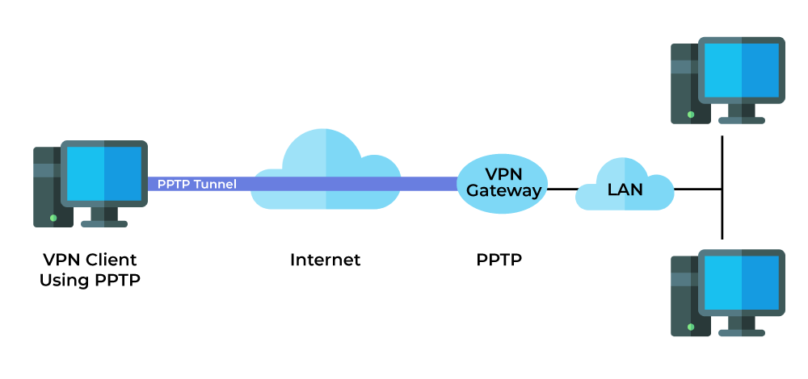

Introducción a la Tunelización en Redes
1. Concepto y Principios Básicos de la Tunelización
La tunelización, también conocida como "tunneling", es una técnica utilizada en redes para encapsular un protocolo de red dentro de otro, permitiendo el transporte seguro de datos a través de una red pública o privada. Esta técnica es crucial para garantizar la seguridad y confidencialidad en entornos donde la comunicación entre dispositivos puede estar expuesta a amenazas externas.
El concepto central de la tunelización se basa en la creación de un "túnel" virtual a través del cual los datos se transmiten de manera cifrada, protegiéndolos contra accesos no autorizados o interceptaciones durante su tránsito.
Ventajas clave:
- Seguridad mejorada: Protege los datos mediante cifrado y autenticación.
- Compatibilidad: Permite la interconexión entre redes dispares utilizando protocolos estándar.
- Flexibilidad: Se adapta a diversas necesidades, desde acceso remoto hasta interconexión de oficinas.
2. Tipos de Tunelización y Protocolos Utilizados
Existen diferentes tipos de tunelización, cada uno diseñado para cumplir con requisitos específicos de seguridad, rendimiento y compatibilidad.
2.1 Tunelización Punto a Punto (PPTP)
Este protocolo es uno de los más antiguos y fáciles de configurar. Utiliza una combinación de PPP (Point-to-Point Protocol) para encapsular datos y GRE (Generic Routing Encapsulation) para su transporte. Aunque es rápido, presenta debilidades de seguridad que lo hacen inadecuado para aplicaciones modernas sensibles.
2.2 Layer 2 Tunneling Protocol (L2TP)
Ofrece mayor seguridad que PPTP al combinarse con IPsec. Encapsula los datos en el nivel 2 del modelo OSI, garantizando autenticación robusta y cifrado durante el transporte.
2.3 IPsec (Internet Protocol Security)
Un protocolo ampliamente utilizado que proporciona autenticación, integridad y cifrado a nivel de red. Es ideal para conexiones seguras a gran escala, como redes corporativas o enlaces entre sucursales.
2.4 OpenVPN
Una solución de código abierto que utiliza SSL/TLS para el cifrado, garantizando alta seguridad y flexibilidad. Es compatible con múltiples plataformas y redes.
2.5 SSH Tunneling
Utiliza el protocolo SSH (Secure Shell) para encapsular datos, proporcionando una opción confiable para conexiones remotas seguras.
3. Aplicaciones y Casos de Uso de la Tunelización
La tunelización encuentra aplicaciones prácticas en diversos escenarios que demandan seguridad, privacidad y eficiencia en la transferencia de datos.
3.1 Redes Privadas Virtuales (VPNs)
Las VPNs utilizan tunelización para establecer conexiones seguras entre dispositivos o redes. Esto es esencial para trabajadores remotos, ya que garantiza el acceso seguro a los recursos internos de una organización desde ubicaciones externas.
3.2 Conexiones entre Sucursales
Las empresas con múltiples oficinas utilizan tunelización para interconectar redes distribuidas, asegurando la transferencia de datos sensibles.
3.3 Protección contra Restricciones Geográficas
Usuarios individuales recurren a la tunelización para eludir restricciones impuestas por gobiernos o proveedores de servicios de Internet.
3.4 Intercambio de Datos en Ambientes de Nube
Los servicios en la nube emplean tunelización para garantizar la seguridad y el rendimiento en la transferencia de datos entre servidores y usuarios.
4. Retos y Futuro de la Tunelización
4.1 Retos Actuales
- Complejidad de Configuración: Implementar tunelización segura puede requerir conocimientos técnicos avanzados.
- Sobrecarga de Rendimiento: El cifrado y la encapsulación pueden reducir el rendimiento de la red.
- Compatibilidad: Algunos dispositivos o redes pueden no soportar ciertos protocolos de tunelización.
4.2 Futuro de la Tunelización
La tunelización continuará evolucionando con el avance de tecnologías como SD-WAN (Software-Defined Wide Area Network) y SASE (Secure Access Service Edge), que integran tunelización con otros servicios de red y seguridad. Estas soluciones ofrecerán una gestión más simplificada, escalabilidad y mayor flexibilidad para entornos empresariales modernos.